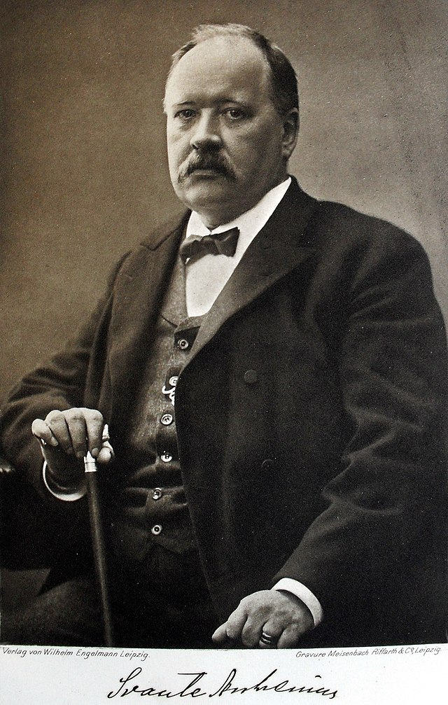
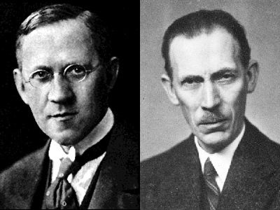

Acidity in Chemicals
Properties of Acids
- Acids lie on the pH Scale ranging from 0 - 6 and the pOH scale ranging from 8 - 14
- Since they have a lot of ions, they are electrolytes meaning that they conduct electrical current.
- Have a sour taste to the human taste bud.
- Change the color of certain acid-base indicators. Two common indicators are litmus and phenolphthalein. Blue litmus turns red in the presence of an acid, while phenolphthalein turns colorless.
- Acids react with active metals to yield hydrogen gas.
- Acids react with bases to produce a salt compound and water. When equal moles of an acid and a base are combined, the acid is neutralized by the base. The products of this reaction are an ionic compound, which is labeled as a salt, and water.
- Some Acids are highly corrosive in nature which means that they corrode or rust metals.
- The different types of acids are organic acids, mineral acids, strong acids, weak acids, concentrated acids, dilute acids, Oxy-acids, Hydracids, monobasic acids, dibasic acids, and tribasic acids.
Properties of Bases
- Bases lie on the pH Scale ranging from 8 - 14 and the pOH ranging from 0 - 6
- Bases are bitter in taste and lose that taste when mixed with with acids.
- Bases react with acids to form salt and water. This process is called Neutralisation Reaction.
- Bases feel slippery or sloapy and are actually used to make cleaning products.
- Some bases are great conductors of electricity and bases like sodium hydroxide, potassium hydroxide, etc are used as electrolytes.
- Alkalis are bases that produce hydroxyl ions (OH-) when mixed with water. Alkalis and ammonium salts produce ammonia.
- Hydrogen gas is evolved when metals react with a base.
- The different kinds of bases are strong base acid, weak base acid, concentrated base, dilute base, monoacidic base, diacidic base and triacidic base.

Arrhenius Theory
Svante Arrhenius
Svante August Arrhenius was a Swedish scientist. Originally a physicist, but often referred to as a chemist, Arrhenius was one of the founders of the science of physical chemistry. He received the Nobel Prize for Chemistry in 1903, becoming the first Swedish Nobel laureate.
Arrhenius theory, introduced in 1887, described that acids are substances that dissociate in water to yield electrically charged atoms or molecules, called ions, one of which is a hydrogen ion (H+), and that bases ionize in water to yield hydroxide ions (OH−).
Bronsted-Lowry Theory
Thomas Lowry & Johannes Bronsted
Thomas Martin Lowry was an English physical chemist who was a founder-member and president of the Faraday Society. Johannes Nicolaus Brønsted, was a Danish physical chemist. He earned a degree in chemical engineering in 1899 and his Ph.D. in 1908 from the University of Copenhagen and was immediately thereafter appointed professor of inorganic and physical chemistry at the same university. The two men developed the Brønsted–Lowry acid–base theory simultaneously and independently.
Bronsted–Lowry theory, also called proton theory of acids and bases was introduced in 1923 stating that any compound that can transfer a proton to any other compound is an acid, and the compound that accepts the proton is a base. A proton is a nuclear particle with a unit positive electrical charge; it is represented by the symbol H+ because it constitutes the nucleus of a hydrogen atom.
Lewis Theory
Gilbert N. Lewis
Gilbert Newton Lewis ForMemRS was an American physical chemist and a former Dean of the College of Chemistry at University of California, Berkeley.
Lewis theory, introduced in 1923 by the U.S. chemist Gilbert N. Lewis, concerns acids and bases in which an acid is regarded as any compound which, in a chemical reaction, is able to attach itself to an unshared pair of electrons in another molecule. The molecule with an available electron pair is called a base.
Why is Water so Special Regarding These Theories?
These theories never explain whether or not neutrals (which is only pure distilled water) donates or accepts protons. That's because neutrals can play both roles depending on the reaction. For example, if it is mixing with acids, then it will accept protons, playing the role of a base. And if it is mixing with bases, then it will donate protons, plaing the role of an acid.
Strong Acids vs. Weak Acids
^^ Examples of Strong and Weak Acids
^^ Video Explaining Differences in Strong and Weak Acids
Strong Bases vs. Weak Bases
Examples
| Strong Base | Weak Base |
|---|---|
| Strontium hydroxide | Alanine |
| Barium hydroxide | Ethylamine |
| Calcium hydroxide | Dimethylamine |
| Sodium hydroxide | Methylamine |
| Cesium hydroxide | Glycine |
| Cesium hydroxide | Trimethylamine |
| Potassium hydroxide | Hydrazine |
Differences

Four Different Types of Acid Reactions
- Acid + Metal --> Salt + H2(g)
- Acid + Oxide --> Salt + H2O
- Acid + Hydroxide --> Salt + H2O
- Acid + Carbonate --> Salt + H2O + CO2
Examples:
2HCl + Mg --> MgCl2 + H2(g)
HBr + Na --> NaBr + H2(g)
HF + Al --> AlF3 + H2(g)
Examples:
2HCl + CaO --> CaCl2 + H2O
HCl + Li2O --> LiCl + H20
Example:
HCl + NaOH --> NaCl + H2O
Example:
NF + MgCo3 --> MgF2H2O + CO2